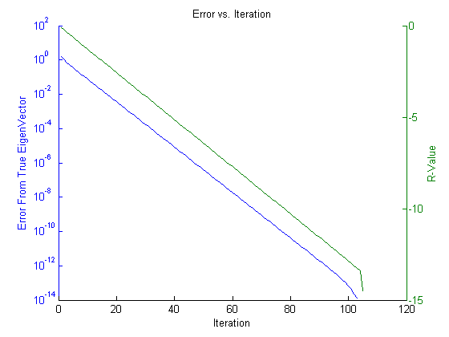

bookAdjacency = [0, 0, 0, 0, 1, 0;
0, 0, 0, 0, 1, 1;
0, 1, 0, 0, 0, 1;
1, 0, 1, 0, 1, 0;
1, 1, 0, 1, 0, 0;
1, 1, 1, 0, 0, 0]
[v,e]=eigs(bookAdjacency, 1)
load('student_adjacency.txt')
studentMatrix = zeros(33, 33);
addedZeros = zeros(30,1);
addedZeros2 = zeros(1, 33);
student_adjacency = horzcat(student_adjacency, addedZeros);
student_adjacency = horzcat(student_adjacency, addedZeros);
student_adjacency = horzcat(student_adjacency, addedZeros);
student_adjacency = vertcat(student_adjacency, addedZeros2);
student_adjacency = vertcat(student_adjacency, addedZeros2);
student_adjacency = vertcat(student_adjacency, addedZeros2);
studentMatrix = student_adjacency + studentMatrix;
studentMatrx(1,31)= 1;
studentMatrix(31,1) = 1;
studentMatrix(2,31) = 1;
studentMatrix(31,2) = 1;
studentMatrix(2,31) = 1;
studentMatrix(31,3) = 1;
studentMatrix(3,31) = 1;
studentMatrix(31,4) = 1;
studentMatrix(4,31) = 1;
studentMatrix(31,5) = 1;
studentMatrix(5,31) = 1;
studentMatrix(31,6) = 1;
studentMatrix(6,31) = 1;
studentMatrix(31,7) = 1;
studentMatrix(7,31) = 1;
studentMatrix(31,8) = 1;
studentMatrix(8,31) = 1;
studentMatrix(31,9) = 1;
studentMatrix(9,31) = 1;
studentMatrix(32,10) = 1;
studentMatrix(10,32) = 1;
studentMatrix(32,11) = 1;
studentMatrix(11,32) = 1;
studentMatrix(32,12) = 1;
studentMatrix(12,32) = 1;
studentMatrix(32,13) = 1;
studentMatrix(13,32) = 1;
studentMatrix(32,14) = 1;
studentMatrix(14,32) = 1;
studentMatrix(33,15) = 1;
studentMatrix(15,33) = 1;
studentMatrix(33,16) = 1;
studentMatrix(16,33) = 1;
studentMatrix(33,17) = 1;
studentMatrix(17,33) = 1;
studentMatrix(33,18) = 1;
studentMatrix(18,33) = 1;
studentMatrix(33,19) = 1;
studentMatrix(19,33) = 1;
[domV, domGamma, bkVec] = powerMethod(studentMatrix);
[row, col] = size(bkVec);
for k = 1:1:row;
ekVec(k,1) = k;
ekVec(k,2) = norm(transpose(bkVec(k,:))-domV);
end
rateConv = ekVec(51,2)/ekVec(50,2)
for i = 1:1:row;
rval(i, 1) = (log(rateConv)/log(10))*i;
end
[hAx,hLine1,hLine2] = plotyy(ekVec(:,1),ekVec(:,2),ekVec(:,1),rval,'semilogy','plot');
xlabel('Iteration')
ylabel(hAx(1),'Error From True EigenVector')
ylabel(hAx(2),'R-Value')
title('Error vs. Iteration');
for(i=1:1:33)
vert(i,1) = i;
end
sortedRows = horzcat(domV, vert);
sortedPeople = sortrows(sortedRows, 1)
bookAdjacency =
0 0 0 0 1 0
0 0 0 0 1 1
0 1 0 0 0 1
1 0 1 0 1 0
1 1 0 1 0 0
1 1 1 0 0 0
v =
-0.2132
-0.4072
-0.3738
-0.4725
-0.4827
-0.4391
e =
2.2640
rateConv =
0.7437
sortedPeople =
0 25.0000
0.0353 29.0000
0.1051 23.0000
0.1070 24.0000
0.1367 20.0000
0.1367 27.0000
0.1415 11.0000
0.2290 21.0000
0.2387 22.0000
0.4000 19.0000
0.4050 18.0000
0.4136 16.0000
0.4176 28.0000
0.4209 15.0000
0.4283 14.0000
0.4433 10.0000
0.4619 26.0000
0.5276 1.0000
0.5312 32.0000
0.5317 12.0000
0.5463 33.0000
0.5473 4.0000
0.5473 7.0000
0.5482 17.0000
0.5825 13.0000
0.6057 30.0000
0.9169 8.0000
0.9925 5.0000
1.0110 9.0000
1.0554 2.0000
1.2439 3.0000
1.3879 6.0000
2.0551 31.0000
